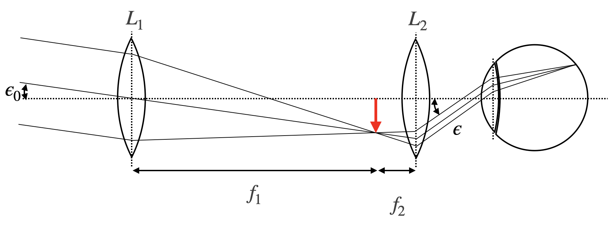

This page was generated from `/home/lectures/exp3/source/notebooks/L5/Telescope.ipynb`_.

Telescope¶
Other than the microscope, the telescope is made to observe distant objects, which would appear under a very small observation angle. In the same way as a microscope, the telescope consists of two lenses with the focal distances \(f_1,f_2\).
 |
|---|
Fig.: Kepler telescope with two biconvex lenses, creating a reversed image of distance objects. |
As indicated in the sketch above, the first lens generates an image at the focal length of the first lens. This intermediate image is the magnified by an eye-piece as well acting as a magnifying glass. We may therefore apply the same kind of techniques as earlier for the calculation of the angular magnification. The angle of observation for the object of size \(D\) is given by
while the angle of observation through the telescope is given as
Correspondingly, the angular magnification is given by
The magnification is therefore given by the ration of the focal length of the entrance lens and the eye-piece. The above telescope is also termed astronomical telescope or Kepler telescope, since it has been used for astromical observations. It creates an image which is reversed.
A telescope with an upright image may be created with the help of a concave lens. This type of telescope is called Galilei telescope and obeyes the same magnification formula as above. Due to the fact that a concave lens has a negative focal length, the total magnification will be negative as well being indicative for an upright image.
|
|---|
Fig.: Galilei telescope for imaging objects into upright images with the help of a concave and a convex lens. |

Modern powerful telescopes also use mirrors instead of refracting optical elements, as reflecting elements with nearly 100 percent reflectivity can be built with a much smaller mass than large glass elements. Such telescopes come in different setups. The one below is a Cassegrain telescope, where a secondary convex miror is used for imaging the intermediate image to the eye.
|
|---|
Fig.: Reflective optics is commonly used in modern high quality telescopes for the advantage of weight. The image and sketch shows the optics of a so-called Cassegrain telescope. |


The most famous Cassegrain telescope is probably the Hubble space telescope as you might recognize from the sketch below.
|
|---|
Fig.: Light path in the Hubble space telescope. |